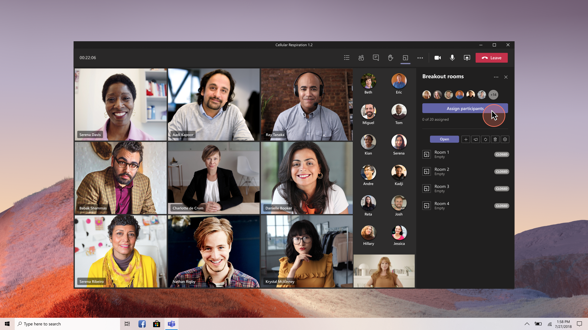
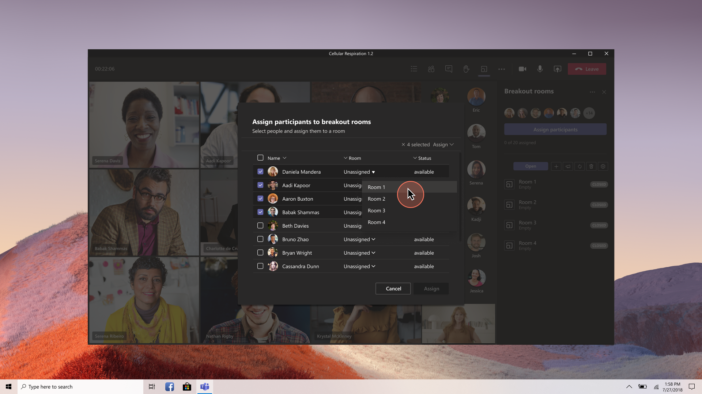
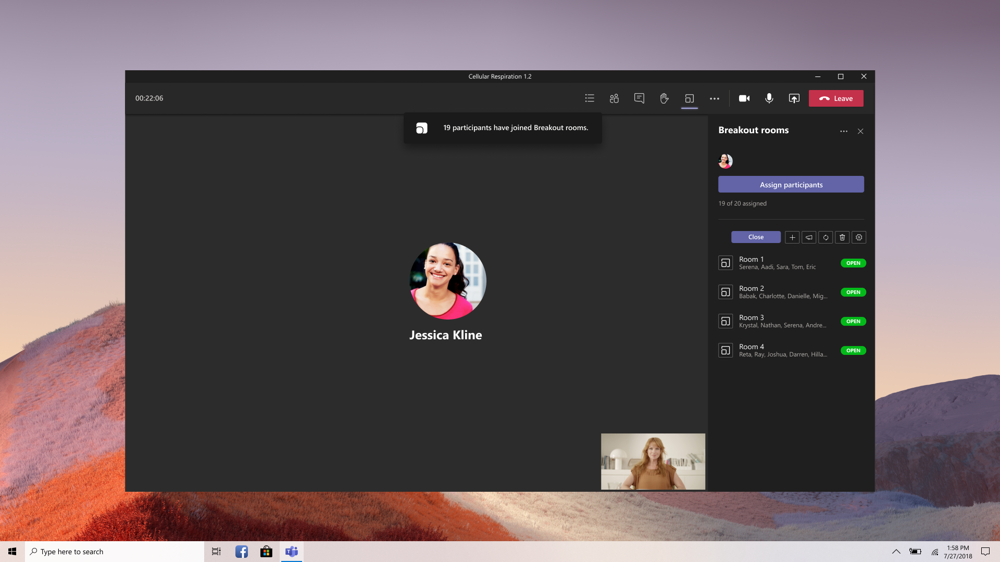

Role
Sole Senior Designer leading vision and end-to-end design for organizer and participant experiences, collaborating with Product Management and Engineering.
Microsoft Teams
Making disconnected sub-meetings feel like one unified experience — shipped under a one-quarter deadline during Teams' fastest growth period.
Role
Sole Senior Designer
Scope
Vision + End-to-End Design
Growth
20M → 75M DAU
20M→75M
Daily Active Users
1 Qtr
Concept to Ship
CVP
Long-term Vision Presented
Sole Senior Designer leading vision and end-to-end design for organizer and participant experiences, collaborating with Product Management and Engineering.
In early 2020, as the pandemic drove millions to remote work and learning, breakout rooms became one of the most requested features from customers.
Teachers needed to split students into study groups. HR and corporate teams needed workgroup sessions for brainstorming and workshops. Zoom had it. We didn't. Leadership mandated we close this competitive gap — within one quarter.

Teams' backend couldn't create sub-meetings within a parent meeting, and the meeting canvas was non-interactive streaming video.
My original vision was a spatial experience where organizers could see live feeds of each room on the canvas and drag-and-drop participants between them. The tech stack couldn't support it.

I killed the canvas-based vision for the MVP and designed a two-surface management model instead — choosing shippability over aspiration while preserving the vision as a northstar.
I chose a modal for bulk participant assignment rather than inline editing, because organizers managing 30+ participants needed to work fast. I kept the participant experience passive — notification-based, no action required — to reduce friction in the classroom use case.
I also navigated component approvals with the Framework design team in Seattle during a mid-cycle redesign, and partnered with a junior dev lead whose strengths were backend, adjusting how I communicated specs to protect frontend quality.
A modal dialog lets organizers select participants from a list and bulk-assign them to rooms.
A persistent side panel serves as a command center — showing room status, participant assignments, and a single "Open" button to launch all rooms simultaneously. Participants receive a notification and are moved into their rooms automatically.

I presented the long-term vision to Jeff Teper, Corporate Vice President of Office 365, establishing a northstar for the feature's evolution.
We shipped the MVP within one quarter and achieved competitive parity with Zoom during Teams' fastest growth period — the platform scaled from 20M to 75M daily active users that year. The feature continued to evolve with simplified assignments, organizer announcements to rooms, and participant shuffling.
Next Feature
Meeting Notifications